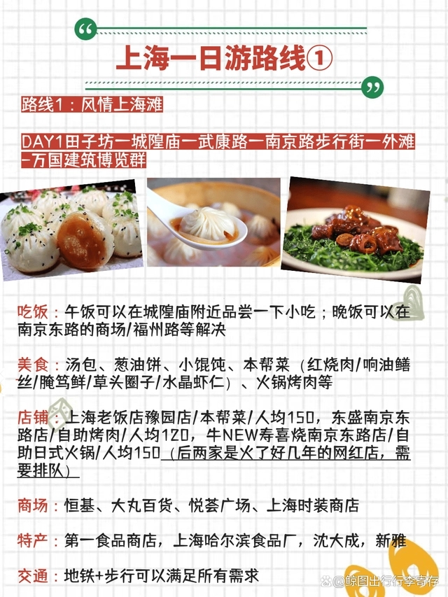
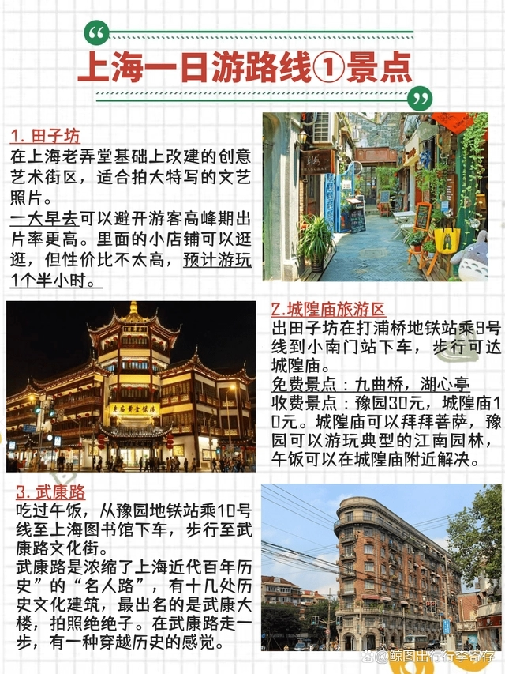

2023上海旅游超全攻略‼️一定要去🆚千万别去
路线1：风情上海滩
DAY1
田子坊—城隍庙—武康路—南京路步行街—外滩—万国建筑博览群
吃饭：午饭可以在城隍庙附近品尝一下小吃，晚饭可以在南京东路的商场/福州路等解决。
美食：汤包、葱油饼、小馄饨、本帮菜（红烧肉 / 响油鳝丝 / 腌笃鲜 / 草头圈子 / 水晶虾仁）、火锅烤肉等。
店铺：上海老饭店豫园店 / 本帮菜 / 人均 150 元
东盛南京东路店 / 自助烤肉 / 人均 120 元
牛NEW寿喜烧南京东路店 / 自助日式火锅 / 人均 150 元（需排队）
商场：恒基、大丸百货、悦荟广场、上海时装商店
特产：第一食品商店，上海哈尔滨食品厂，沈大成，新雅
交通：地铁+步行可以满足所有需求

1. 田子坊
在上海老弄堂基础上改建的创意艺术街区，适合拍大特写的文艺照片。一大早去可以避开游客高峰期出片率更高。里面的小店铺可以逛逛，但性价比不太高，预计游玩1个半小时。
2. 城隍庙旅游区
出田子坊在打浦桥地铁站乘9号线到小南门站下车，步行可达城隍庙。
免费打卡景点：九曲桥，湖心亭。
收费景点：豫园30元，城隍庙10元。城隍庙可以拜拜菩萨，豫园可以游玩典型的江南园林，午饭可以在城隍庙附近解决。
3. 武康路
吃过午饭，从豫园地铁站乘10号线至上海图书馆下车，步行至武康路文化街。
武康路是浓缩了上海近代百年历史的“名人路”，有十几处历史文化建筑，最出名的是武康大楼，拍照绝绝子。在武康路走一步，有一种穿越历史的感觉。

4. 南京东路
从上海图书馆站乘10号线在南京东路下车，体力好的话也可以从人民广场下车，即可游玩南京东路。
晚上去玩是极好的，夜幕降临华灯初上，繁华的南京东路上的招牌也都亮起来了。一路走走逛逛，夜上海的氛围感十足，这不就是游客的快乐嘛。路途中可以选择去商场吃饭，可以挑选特产，也有华为、苹果、Switch、美邦、耐克、阿迪、ZARA等各大服饰、数码、手表等品牌店铺可以逛，从平价品牌到贵价品牌应有尽有。
5. 外滩
从南京东路可逛至外滩，外滩全长1.5千米，南起延安东路，北至苏州河上的外白渡桥，东面即黄浦江，西面是旧上海金融、外贸机构的集中地，矗立52幢风格迥异的古典复兴大楼，也称万国建筑博览。
外滩怎么玩？
一可以近距离接触黄浦江，感受黄浦江的滔滔江水和江滩的微风，遥看对面的东方明珠等现代建筑。
二可以借万国博览建筑拍出复古大片，主要建筑风格有英国古典式、英国新古典式、英国文艺复兴式亚细亚大楼、法国古典式、法国大住宅式、哥特式、巴洛克式等等